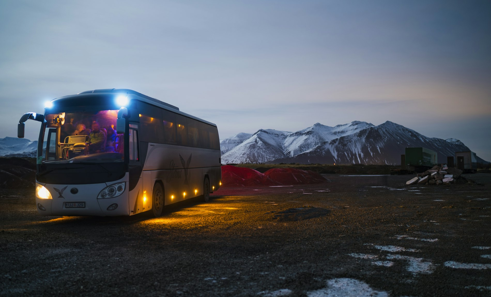
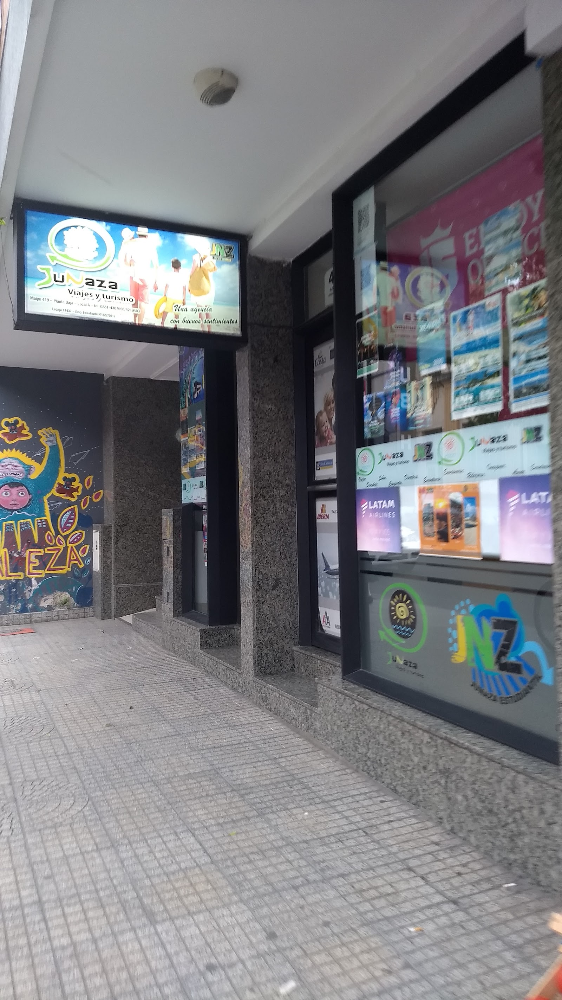

Egresados
Viajes de egresados
El viaje del curso, armado sobre la cantidad de estudiantes y las fechas posibles del grupo.
- Cantidad de estudiantes
- Fechas posibles
- Acompañamiento a coordinar

JUNAZA
La frase está en su propio cartel, en el centro de Tucumán. Viajes de egresados, turismo estudiantil y salidas grupales atendidos por sus dueños.
4,324 reseñas en Google
Lun a vie 9 a 17sábados de 9 a 13
Lo que la agencia informa que hace, tal como figura en el registro sectorial y en su propio local del centro.
Egresados
El viaje del curso, armado sobre la cantidad de estudiantes y las fechas posibles del grupo.
Estudiantil
Salidas de curso y viajes de estudio más cortos, para grupos de escuela.
Grupos
Para grupos ya armados de amigos o familia. Estela Carrillo lo contó así: les mostraron todos los viajes que hacen.
Excursiones
El alcance que la propia agencia informa públicamente para sus excursiones.
Excelente atención y más por sus propios dueños, precios de viajes acorde a la situación, muy recomendable.
Excelente atención. Nos mostraron todos los viajes que hacen. Se nota que son muy responsables.
Calidez en la atención. Los viajes con esta agencia lo realizamos siempre sin ningún inconveniente. Todo muy lindo.

La oficina está en San Martín 667, piso 3, oficina F. Las tres reseñas publicadas coinciden en lo mismo: atienden los dueños y no hubo inconvenientes.
La vidriera del local es de donde salen los colores de esta página: el verde lima del logo y el granito del frente.